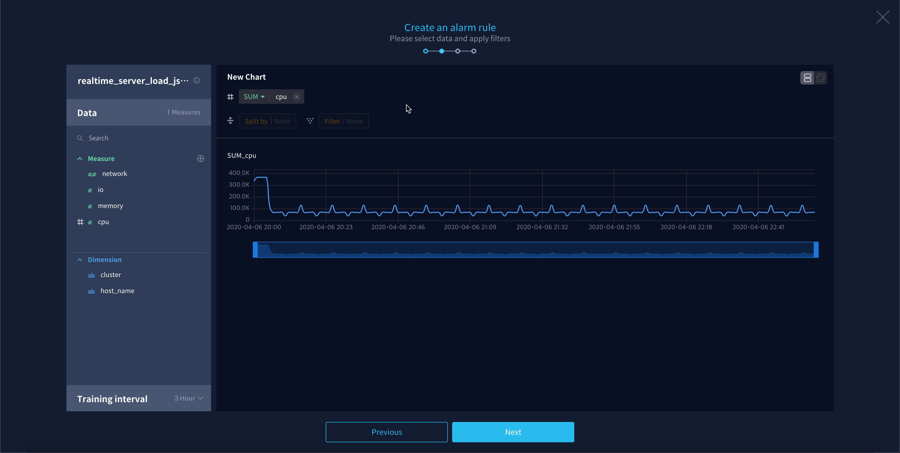
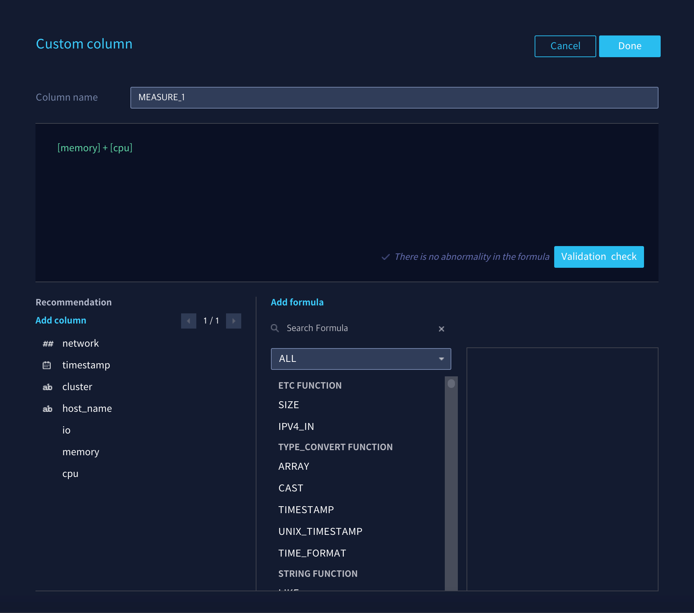
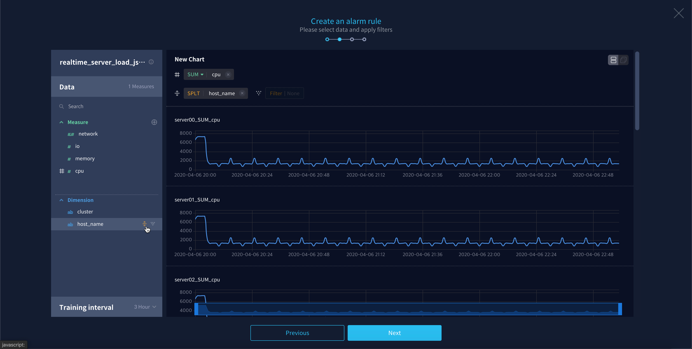
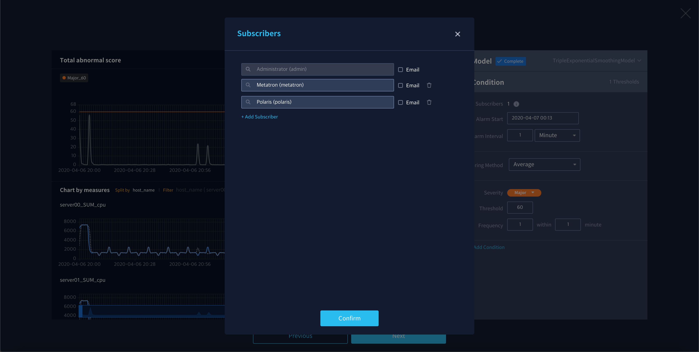
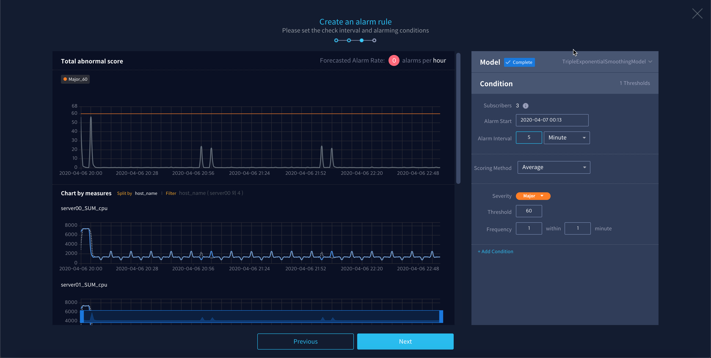
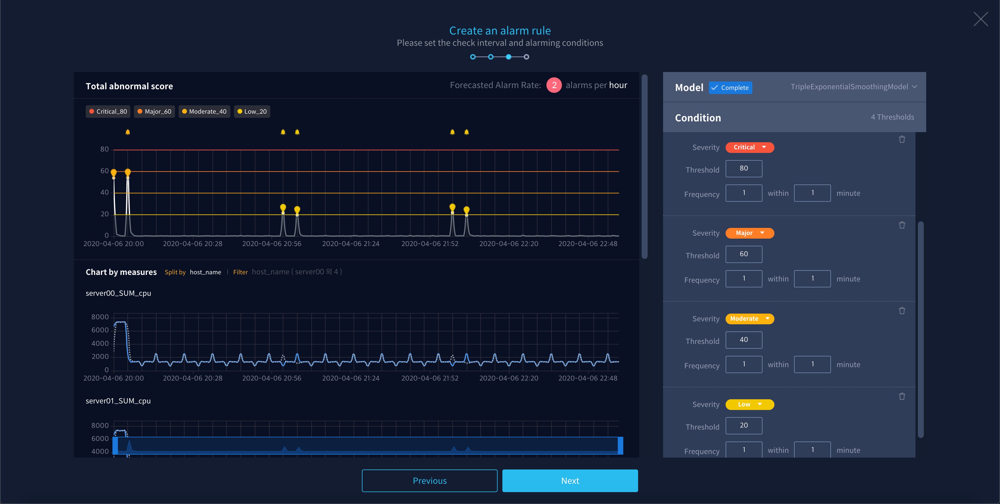

Creating an Alarm Rule¶
Anomaly guides users through the following procedures in order to help users easily create the desired alarm rules.
Select Data Source¶
To create an alarm rule, you must first set up a data source to monitor.
Click the Create Alarm Rule button at the top right of the Alarm Rule page.

Select the data source you want to monitor.

Select metrics to monitor¶
Selecting a data source will take you to the next screen and the Data panel on the left will open. Use this panel to select metrics to monitor as shown below.
Select Measures: In the Measure tab area, select the column you want to monitor. The clicked measure column is automatically moved to the aggregation shelf.
Add User-defined column: If necessary, you can create a new user column by applying a formula to an existing column. In the upper right corner of the Measure area, Click the
button to open a dialog box and set up a custom column.
Change measure aggregation method: Select the desired aggregation method by clicking on each column placed on the Aggregate shelf. The default is SUM.

Split: You can split aggregated data based on dimension value columns. In the Dimension area, move the mouse cursor over the measure column to be used as the basis for division, and then click the
button. The maximum number of splits is 10, and if the dimension value is 10 or more, 10 random values are selected.
Filtering by Dimension value: You can filter aggregate data based on dimension value columns. In the Dimension area, move the mouse cursor over the measure column to set the filter, and click the
button. Then select the specific category you need to monitor as shown below.

Setting the training data¶
When you finished selecting metrics to monitor, now you can select the data range to use for training the predictive model in the Training Interval panel.
Granularity can determine the default unit of time for data to be used for model training. While looking at the graph, choose the unit that best shows the pattern of the data.

Set the range of data to use for training the model. You can enter a range of data to train in units equal to or greater than the default granularity set earlier.

When all settings are complete, click Next.
Choosing a Model¶
Now go to the Model panel and choose which prediction model to use. Metatron Anomaly trains each model using a given set of training data and produces the results. Choose a suitable prediction model through one of the two methods below.
Use recommended model: By default, the model with the highest accuracy score (out of 100) displayed on the right is automatically selected with a Recommend mark.

Select yourself after comparison: If you select each model, you can see the predicted value and Abnormal Score in the graph. You can select the model that you think is most suitable. When you mouse-hover the icon to the right of the model name, you can see the detail learning values.

Setting alarm rule conditions¶
After selecting the predictive model to use, now you need to set the conditions for the alarm to occur in the Condition panel.
Click
to the right of the Subscribers to open a dialog box, and set the target and method to be notified when an alarm occurs.
Set the time when the alarm is triggered by referring to the description of each item below.

Alarm Start: Set when to start an alarm. The alarm starts after the time corresponding to this setting value.
Alarm Interval: Set the interval to generate an alarm when the condition of the alarm is met.
Scoring Methoddetermines how abnormal socres are calculated from multiple measue values split by dimension. The default value is calculated as the average of the abnormal scores of all measures, and can be changed to the maximum or the minimum.

Set the alarm trigger conditions according to the abnormal score of monitored data with reference to the description of the following items. By default, one
Majorlevel condition is given and you can set more conditions with + Add Condition button.
Severity: Set the severity of the alarm for a given condition.
Threshold: If the abnormal score exceeds this setting, the data is considered abnormal.
Frequency: Determines how often an alarm is triggered when the frequency of abnormal scores exceeds the threshold. For example, if it is set to “3 within 5 minute “, an alarm is generated if the abnormal score exceeds the limit value more than 3 times within 5 minutes.
When all settings are complete, click Next.
Complete the Rule¶
After all the settings you’ve done, finish the process of creating the alarm rule as shown below.
Enter the name and description of the alarm rule and click the Done button.

The created alarm rule is exposed at the top of the alarm rule list, and is immediately changed to the running state.